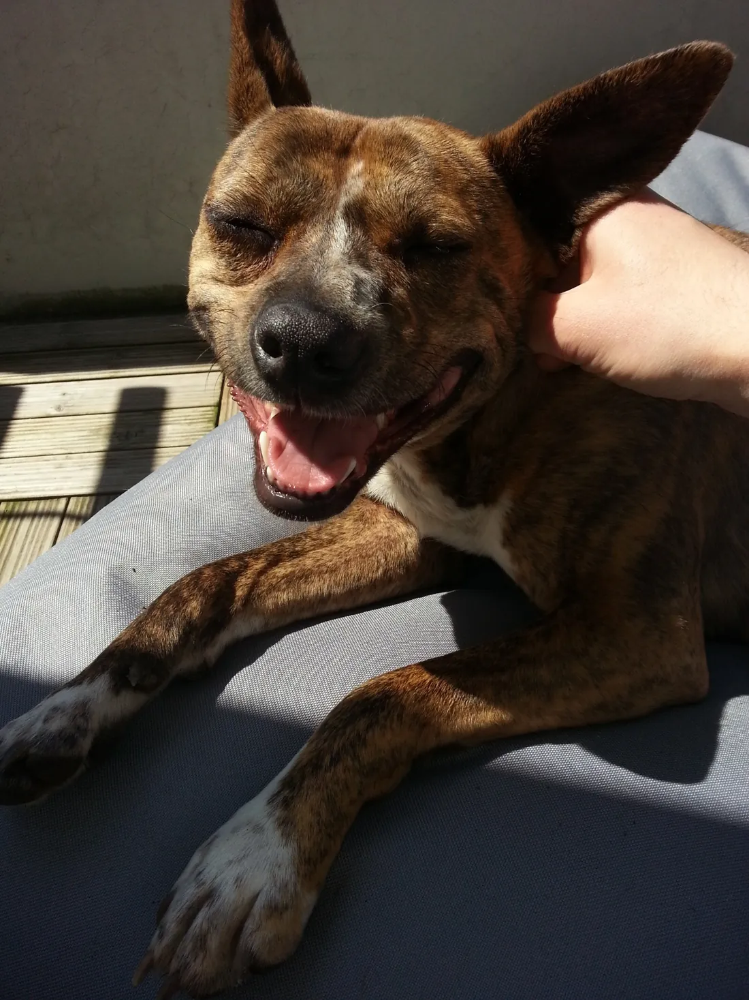

400 Fragen
Alle Quellen
Der Gesamtpool mit Quellenvarianten und eigenem Lernstand.
Katalog öffnenWissen für Mensch & Hund.
Über diese LernhilfeDein Sachkundetrainer / NRW
Für die Prüfung und das Leben mit Hund. Übe mit Fragenkatalogen, prüfe dein Wissen und wiederhole gezielt deine Fehler.
Unabhängige Lernhilfe · keine behördliche Prüfung oder Bescheinigung.
Kostenlos. Ohne Konto. Ohne Werbung.

01 / Dein Lernplatz
Dein Überblick wird beim nächsten Lernen aktualisiert.
Ein Katalog, ein Lernstand. Kein Zusammenzählen überlappender Fragen, keine Prüfungsvorhersage.
Vergleicht denselben Katalog und die Zahl geprüfter Fragen. Unterschiedliche Kataloge sind nicht direkt vergleichbar.
02 / Wähle deinen Einstieg
Viele Fragen vermitteln gemeinsames Grundwissen für §§ 3, 10 und 11. Welcher Nachweis und welcher Katalog zu dir passen, klärst du mit deiner Prüfstelle. Unterschiede verstehen · Weg zur Haltungserlaubnis
400 Fragen
Der Gesamtpool mit Quellenvarianten und eigenem Lernstand.
Katalog öffnen398 Fragen
Grundwissen für die Sachkunde nach §§ 3, 10 und 11 aus den ursprünglichen Katalogen; viele Inhalte überschneiden sich mit dem Kammerkatalog.
Katalog öffnen115 Fragen
Bereitgestellter Übungsbogen mit seinen Originalnummern.
Katalog öffnen97 Fragen
Zugesandte Fassung mit eigenem Lösungsschlüssel.
Katalog öffnen203 Fragen
Veröffentlichter Katalog, getrennt von der 97er-Fassung.
Katalog öffnen197 Fragen
§-11-Lernkatalog für große Hunde; ergänzendes Wissen für § 3.
Katalog öffnenAlle Testreihen sind unverbindliche, geschätzte Prüfungssimulationen. Sie nutzen dokumentierte Quellen und persönliche Behördenauskünfte als Grundlage.
03 / Wissen im Alltag
Verhalten verstehen, Begegnungen aufmerksam begleiten und Verantwortung übernehmen. Unsere Grundlagen verbinden die Themen der Fragenkataloge mit dem Leben mit Hund.

04 / Gut vorbereitet
Ja. Alle Fragenkataloge und Testreihen sind kostenlos und ohne Anmeldung nutzbar. Du kannst mit Sofort-Feedback lernen, Fragen merken und Fehler wiederholen. Dein Lernstand bleibt in diesem Browser. Der Trainer ist eine unabhängige Lernhilfe und stellt keinen Sachkundenachweis aus.
Die Lernbereiche bleiben nach Quellen getrennt: Rhein-Erft enthält Fragen für § 3 / § 10, der Katalog der Tierärztekammern ist für große Hunde nach § 11 vorgesehen. Welche Bescheinigung und Prüfung du brauchst, klärst du bei deiner zuständigen Stelle. Die Testreihen und ihre Unterschiede.
Der Basispool verbindet Verhalten, Erziehung, Gesundheit und rechtliche Grundlagen. Viele dieser Themen sind für die Sachkunde nach §§ 3, 10 und 11 relevant. Die Einstufung eines Hundes und die Anforderungen an seine Haltung sind davon getrennte Fragen. Was „Listenhund“ in NRW bedeutet.
Wähle ein Profil mit 34, 119, 30 oder 50 Fragen. Alle Testreihen sind unverbindliche, geschätzte Prüfungssimulationen. Grundlage sind offizielle Fragenkataloge und veröffentlichte Angaben sowie persönliche Antworten der jeweiligen Ämter und Prüfstellen. Daraus leiten wir eine mögliche Übungssituation ab; Auswahl, Ablauf und Wertung bilden keine amtliche Prüfung verbindlich nach. Beim Essen-Beispiel kommen ausdrücklich gekennzeichnete eigene Rechtsfragen hinzu. Testprofile und Annahmen ansehen.
Auf „Haltung & Recht“ findest du eine erste Einordnung zu Hundehaltung und Sachkunde in NRW mit Behördenquellen und Rechtstexten. Verbindliche Auskunft zu deinem Hund gibt die zuständige Behörde. Haltungsauflagen und zuständige Stellen.
Nein. Sachkunde betrifft die Kenntnisse des Menschen; bei einer Verhaltensprüfung geht es um den Hund und die führende Person. Ein Übungsergebnis hier ersetzt weder diese Prüfung noch eine behördliche Entscheidung. Wesenstest und Verhaltensprüfung einordnen.
05 / Wissen teilen statt verkaufen
Eine freiwillige Unterstützung per PayPal wird vorbereitet.
Externer Zahlungsdienst · Kein PayPal-Inhalt wird hier geladen. Keine Spendenbescheinigung.